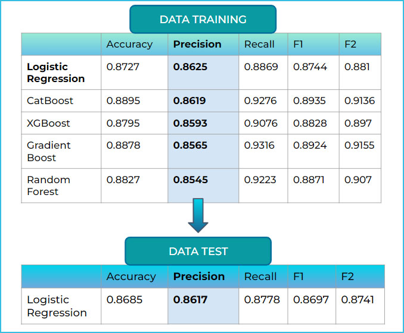

Supervised Machine Learning
Bank Marketing Campaign Analysis.
Case Study: For my Data Science Bootcamp final project, I conducted a case study on optimizing a bank marketing campaign for customer acquisition and cost-efficiency. I used a Kaggle dataset of a Portuguese bank's tele-marketing campaign spanning 2008-2010. The study aimed to analyze historical data to predict customer deposit decisions.
Deposits are crucial for a bank's business, acting as funding for loans, a primary source of revenue. My objectives were threefold; Understand customer deposit behavior patterns, Predict the key factors influencing deposit decisions and reduce marketing campaign costs by targeting only those most likely to deposit.
Task: To achieve those objectives, my task was to build an analytical finding and machine learning model to predict customer response to the marketing campaign and recommend cost-effective strategies. The dataset contained 41,000 rows with 21 features, including a binary target variable ("deposit decision") labeled as "yes" or "no." Notably, the target class was imbalanced, with 88% belonging to the "no" class and 12% to the "yes" class.
Action and Method: I cleaned and transformed relevant data from the dataset, removing irrelevant features. However, initial analysis using PyCaret's metrics revealed low scores across most metrics, even with random sampling technique. This was due to the extreme class imbalance in the target variable (deposit decision).
To address this, I employed stratified sampling, ensuring the proportion of classes in the sample reflects the overall distribution. Subsequent hypothesis testing confirmed that the sampled features were representative of the entire dataset.
Once the class imbalance was addressed, I focused on my first objective: understanding customer deposit behavior patterns. I conducted the Conversion Rate (CVR) method and inferential statistics like correlation and hypothesis testing to identify specific groups more likely to deposit. It can be seen below:
To address the remaining predictive goals (2 and 3), I built and evaluated various machine learning models using scikit-learn and ensemble methods. I preprocessed the data and split it into training and testing sets for model training. Among several supervised learning algorithms, logistic regression emerged as the optimal model after extensive evaluation and hyperparameter tuning. The result:
To fulfill my second objective of predicting key factors influencing deposit decisions, I performed feature extraction from the logistic regression model. Feature extraction revealed the five most influential factors impacting deposit decisions: inflation rate, longer call duration, March as the contact month, employment rate, and existing customer status (recurrent client).
To assess the potential cost savings of using the model for targeted marketing (goal 3), a confusion matrix. will be used. Assuming a telemarketing campaign cost of €3.12 per customer and a test dataset of 2,785 individuals. If we use previous campaign method, then the cost of marketing campaign is 2785*3.12 = 8698 euros. While using model, we know who will be targeted, from 2785, 1226 are our potential clients, mispredicted individuals are 165 people. Therefore the cost of marketing campaign is only (1226+165) *3.12 or 4433 euros. From this, model may save 48% of marketing campaign budget.
Result: We found that model can save up to 48% of marketing budget, thus for combining insights from all three goals, I recommend the following business strategies:
1. Consumer Price Index, When CPI rate is low, push the telemarketing campaign to the client. 2. Duration, Improve campaigner negotiation skills because more duration means more information that can be delivered. 3. Period of Month, Explore the financial event in certain month such as when tax incentives on month March or bonus salary on particular months. 4. Number of Employment Rate, When employment rate is low, do more promotion with jargon of “financial stability”. 5. Previous Campaign/recurring client, Build a loyalty strategy in order to strengthen relationship to the client that has been deposit before.
For more detailed you can visit this link:
Powerpoint LinkGithub Link